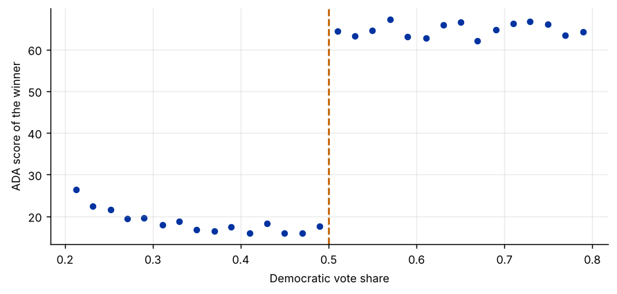
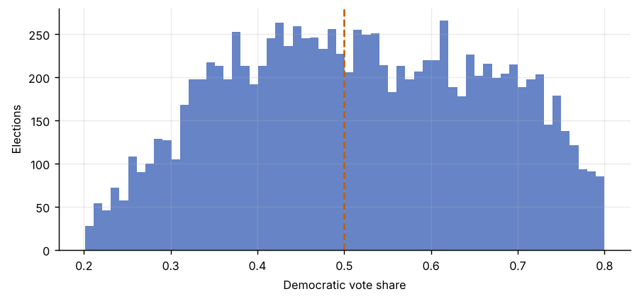

Step 1The question and the design
Do voters choose policies, or only politicians? If candidates converge to the median voter, it should not matter much for how a district is represented which party narrowly wins. If they do not, a narrow Democratic win should produce a much more liberal representative than a narrow Republican win. Lee, Moretti and Butler (2004) answered this with a regression discontinuity.
Whether a Democrat wins is determined by a cutoff: the Democratic vote share \(R_i\) crossing 0.5. Districts where the Democrat won 50.5% and those where she won 49.5% are, on average, alike in everything except who won. So the jump in the winner's liberal voting score at 0.5 measures the effect of electing a Democrat:
| Symbol | Variable in the file | Definition |
|---|---|---|
| \(Y\) | score |
ADA score of the elected representative (0 = conservative, 100 = liberal) |
| \(R\) | demvoteshare |
Democratic share of the two-party vote |
| \(D\) | democrat |
1 if the Democrat won (= 1 exactly when \(R \ge 0.5\): a sharp design) |
| — | lagdemvoteshare |
Democratic vote share in the previous election (determined before the election) |
The identifying assumption
The potential outcomes are continuous at the cutoff: nothing else jumps at 0.5. This fails if candidates can precisely control which side of 0.5 they land on (manipulation), which would make the winners of close races systematically different. It can be checked in two ways: the density of the running variable should not jump at the cutoff, and characteristics determined before the election should not jump either.
How to write it: design
We exploit the discontinuity in party control created by the 50 percent threshold in two-party House elections. Comparing districts in which the Democratic candidate barely won with districts in which she barely lost identifies the effect of electing a Democrat on the representative's voting record, under the assumption that potential outcomes are continuous in the vote share at the threshold.
Step 2Load the data and plot the discontinuity
import pandas as pd
import numpy as np
import matplotlib.pyplot as plt
import statsmodels.api as sm
from causal_tests import rd_estimate, mccrary_test # helper file: causal-inference-guide/examples/causal_tests.py
df = pd.read_csv("close_elections.csv")
c = 0.5
print(f"{len(df):,} district-elections; {(df['demvoteshare'] >= c).mean():.0%} won by a Democrat")
print("Sharp design (democrat = 1 exactly when vote share >= 0.5):", bool(((df["demvoteshare"] >= c) == (df["democrat"] == 1)).all()))
d = df[(df["demvoteshare"] > 0.2) & (df["demvoteshare"] < 0.8)].copy() # contested races for the plot
d["bin"] = pd.cut(d["demvoteshare"], np.arange(0.2, 0.801, 0.02))
b = d.groupby("bin", observed=True).agg(x=("demvoteshare", "mean"), y=("score", "mean"))
fig, ax = plt.subplots()
ax.scatter(b["x"], b["y"], s=18)
ax.axvline(c, color="#c46000", ls="--")
ax.set_xlabel("Democratic vote share"); ax.set_ylabel("ADA score of the winner")13,566 district-elections; 60% won by a Democrat Sharp design (democrat = 1 exactly when vote share >= 0.5): True

How to read it
Always start with this plot: averages of the outcome in narrow bins of the running variable. The jump at 0.5 is unmistakable: districts that barely elect a Democrat are represented by someone with an ADA score roughly 45–50 points higher than districts that barely elect a Republican. On either side the relationship with the vote share is fairly flat. A plot like this, with the estimate overlaid, should be Figure 1 of an RD paper.
Step 3Local linear estimate with a data-driven bandwidth
r = rd_estimate(df["demvoteshare"], df["score"], cutoff=c)
print(f"Bandwidth (Imbens-Kalyanaraman): h = {r['h']:.4f}")
print(f"RD estimate: {r['est']:.2f} (robust s.e. {r['se']:.2f}), using {r['n']:,} elections within the bandwidth")
# the same estimate written out: weighted least squares with a triangular kernel
h = r["h"]
w = np.clip(1 - np.abs(df["demvoteshare"] - c) / h, 0, None)
s = df[w > 0].assign(x=lambda z: z["demvoteshare"] - c, D=lambda z: (z["demvoteshare"] >= c).astype(int))
X = sm.add_constant(pd.DataFrame({"D": s["D"], "x": s["x"], "Dx": s["D"] * s["x"]}))
wls = sm.WLS(s["score"], X, weights=w[w > 0]).fit(cov_type="HC1")
print(f"WLS check: {wls.params['D']:.2f} (s.e. {wls.bse['D']:.2f})")Bandwidth (Imbens-Kalyanaraman): h = 0.1084 RD estimate: 46.74 (robust s.e. 1.27), using 4,961 elections within the bandwidth WLS check: 46.74 (s.e. 1.27)
How to read it
The estimate fits a separate straight line on each side of the cutoff, using only elections within a vote-share distance \(h\) of 0.5 and giving more weight to those closest to it. The jump of about 47 points is the effect of a Democratic win on the winner's ADA score: party, not the median voter, determines roll-call voting. The WLS lines reproduce it exactly, which shows there is nothing hidden in the helper function.
Local linear regression is the standard. Global high-order polynomials (fitting a fourth-degree curve to all the data) can produce misleading estimates and should not be used (Gelman and Imbens 2019).
Step 4Robustness: bandwidth and polynomial order
print(f"{'bandwidth':>10s}{'estimate':>10s}{'s.e.':>8s}{'obs.':>8s}")
for m in (0.5, 0.75, 1.0, 1.5, 2.0):
rr = rd_estimate(df["demvoteshare"], df["score"], cutoff=c, h=h * m)
print(f"{h * m:10.3f}{rr['est']:10.2f}{rr['se']:8.2f}{rr['n']:8d}")
s2 = s.assign(x2=s["x"] ** 2, Dx2=s["D"] * s["x"] ** 2)
X2 = sm.add_constant(pd.DataFrame({"D": s2["D"], "x": s2["x"], "Dx": s2["D"] * s2["x"], "x2": s2["x2"], "Dx2": s2["Dx2"]}))
q = sm.WLS(s2["score"], X2, weights=w[w > 0]).fit(cov_type="HC1")
print(f"\nLocal quadratic (same bandwidth): {q.params['D']:.2f} (s.e. {q.bse['D']:.2f})") bandwidth estimate s.e. obs.
0.054 46.24 1.82 2575
0.081 46.35 1.47 3806
0.108 46.74 1.27 4961
0.163 47.16 1.05 7318
0.217 47.57 0.92 9231
Local quadratic (same bandwidth): 45.85 (s.e. 1.90)How to read it
The estimate barely moves between half and double the optimal bandwidth, and a local quadratic gives the same answer. That stability is what a referee wants to see. If the estimate changed sharply with the bandwidth, the effect would depend on functional-form assumptions away from the cutoff.
Step 5Validity 1: is there manipulation?
m = mccrary_test(df["demvoteshare"], cutoff=c)
print(f"McCrary test: log difference in density = {m['theta']:.3f} (s.e. {m['se']:.3f}), z = {m['z']:.2f}, p-value = {m['p']:.3f}")
fig, ax = plt.subplots()
ax.hist(df.loc[(df["demvoteshare"] > 0.2) & (df["demvoteshare"] < 0.8), "demvoteshare"], bins=60, color="#0033a0", alpha=.6)
ax.axvline(c, color="#c46000", ls="--"); ax.set_xlabel("Democratic vote share"); ax.set_ylabel("Elections")McCrary test: log difference in density = -0.018 (s.e. 0.058), z = -0.30, p-value = 0.763

How to read it
If candidates could precisely engineer narrow wins (through fraud or recounts, say), there would be too many elections just above 0.5 and too few just below. The histogram shows no such heaping, and the McCrary test finds no significant jump in the density. In settings like test scores or income eligibility, where people know the cutoff, this test often fails, and an RD with sorting is not credible.
Step 6Validity 2: covariate balance and placebo cutoffs
cov = rd_estimate(df["demvoteshare"], df["lagdemvoteshare"], cutoff=c, h=h)
print(f"Jump in the previous election's Democratic vote share: {cov['est']:.3f} (s.e. {cov['se']:.3f}), p = {2 * (1 - __import__('scipy').stats.norm.cdf(abs(cov['est'] / cov['se']))):.3f}")
narrow = rd_estimate(df["demvoteshare"], df["lagdemvoteshare"], cutoff=c, h=h / 2)
print(f" with half the bandwidth: {narrow['est']:.3f} (s.e. {narrow['se']:.3f})")
Xc = X.assign(lag=s["lagdemvoteshare"])
ctl = sm.WLS(s["score"], Xc, weights=w[w > 0]).fit(cov_type="HC1")
print(f"RD estimate controlling for the previous vote share: {ctl.params['D']:.2f} (s.e. {ctl.bse['D']:.2f})\n")
for pc in (0.4, 0.6):
side = df[(df["demvoteshare"] < c) if pc < c else (df["demvoteshare"] >= c)]
p = rd_estimate(side["demvoteshare"], side["score"], cutoff=pc, h=h)
print(f"Placebo cutoff at {pc}: {p['est']:.2f} (s.e. {p['se']:.2f})")Jump in the previous election's Democratic vote share: 0.028 (s.e. 0.008), p = 0.000 with half the bandwidth: 0.044 (s.e. 0.011) RD estimate controlling for the previous vote share: 47.23 (s.e. 1.24) Placebo cutoff at 0.4: -0.05 (s.e. 1.22) Placebo cutoff at 0.6: 0.02 (s.e. 1.61)
How to read it
- Covariate balance. The previous election's vote share was determined before this election, so it should not jump at 0.5. It shows a small jump of about 3 percentage points, statistically significant, and it does not disappear with half the bandwidth. This imbalance in close House elections is documented in the literature (Caughey and Sekhon 2011 discuss sorting in very close races). It must be reported. Re-running the main estimate with the covariate as a control leaves it essentially unchanged (47.2 against 46.7), so the imbalance does not drive the result.
- Placebo cutoffs. At vote shares of 0.4 and 0.6, where nothing changes, the estimated jumps are small compared with the 47-point effect at 0.5.
Step 7Write the paper
How to write it: results
Figure 1 shows a sharp discontinuity in the ADA score of the elected representative at the 50 percent vote-share threshold. Local linear estimates with the Imbens–Kalyanaraman bandwidth imply that a Democratic victory raises the representative's ADA score by about 47 points (robust standard error 1.3). The estimate is stable across bandwidths from half to twice the optimal one and under a local quadratic specification. A McCrary test shows no discontinuity in the density of the vote share at the threshold. The previous election's Democratic vote share displays a small discontinuity of about 3 percentage points, consistent with incumbency effects; controlling for it does not change the results.
Common mistakes
- Using global high-order polynomials instead of local linear regression.
- Reporting one bandwidth only.
- Skipping the density test and covariate balance: they are the evidence that the design is valid.
- Forgetting that the RD effect is local: it applies to units at the cutoff (close elections), not to all districts.
- Treating a fuzzy design as sharp. If crossing the cutoff only raises the probability of treatment, divide the outcome jump by the treatment jump (a local IV estimate).
- For inference, the bias-corrected robust confidence intervals of Calonico, Cattaneo and Titiunik (
rdrobust) are now standard.